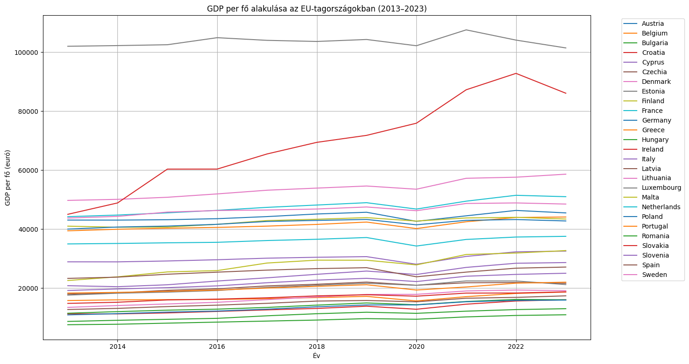
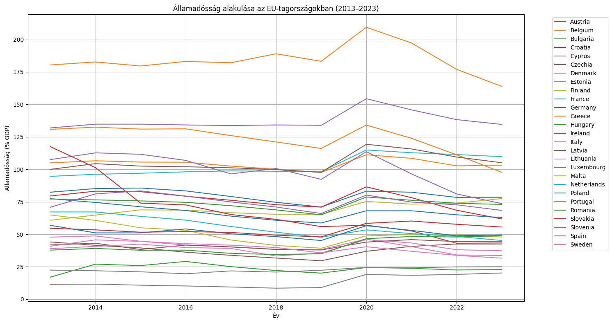
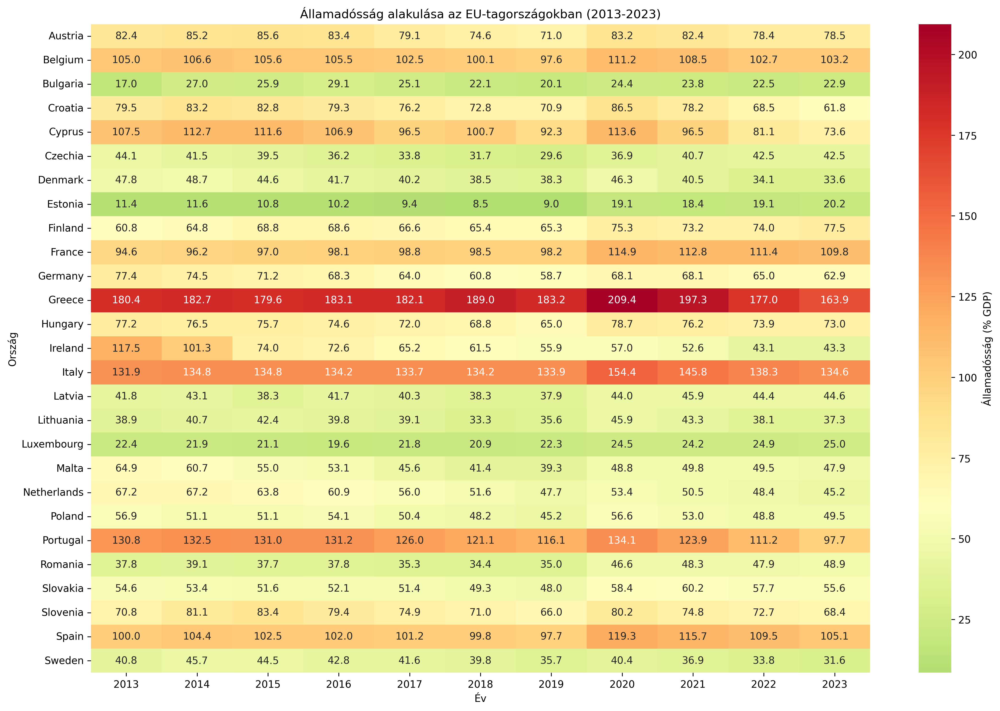
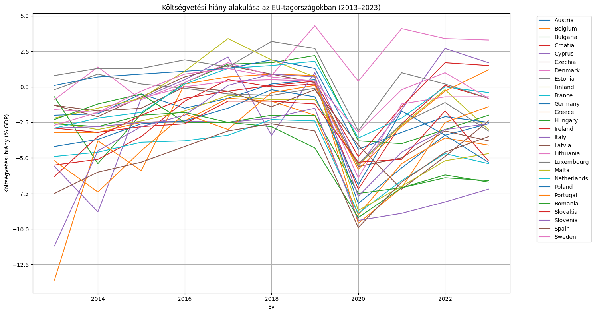
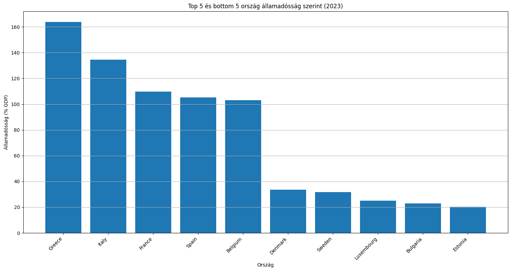
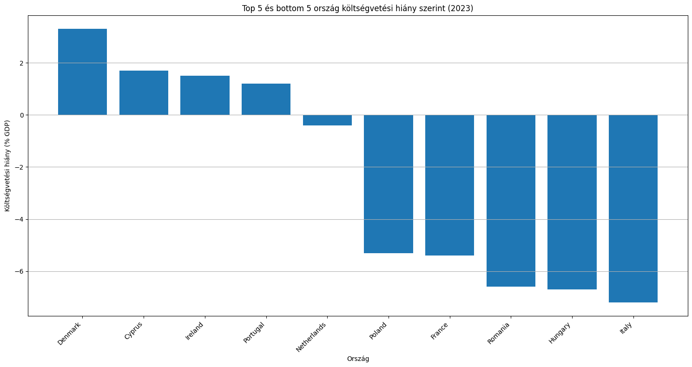
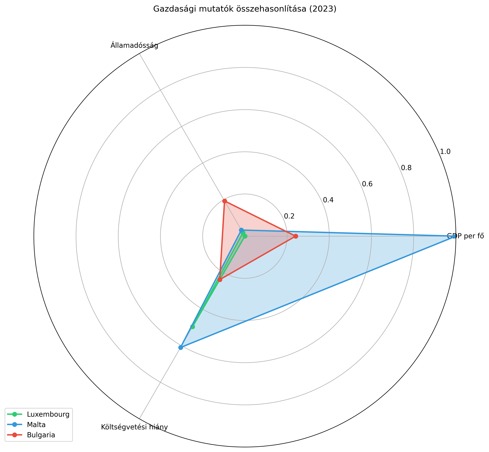
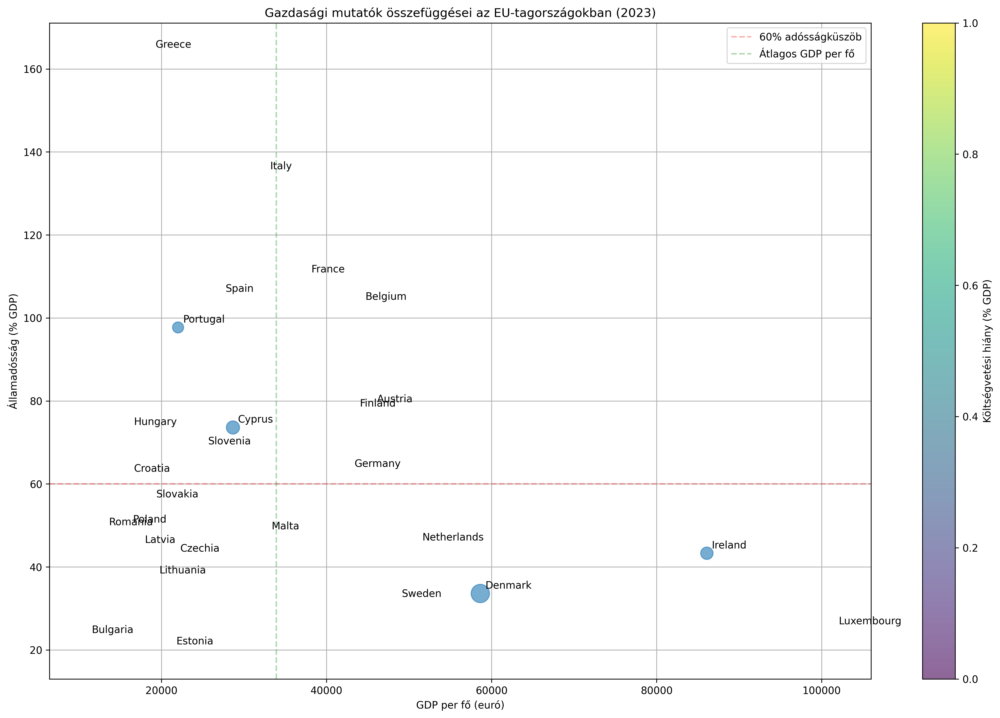
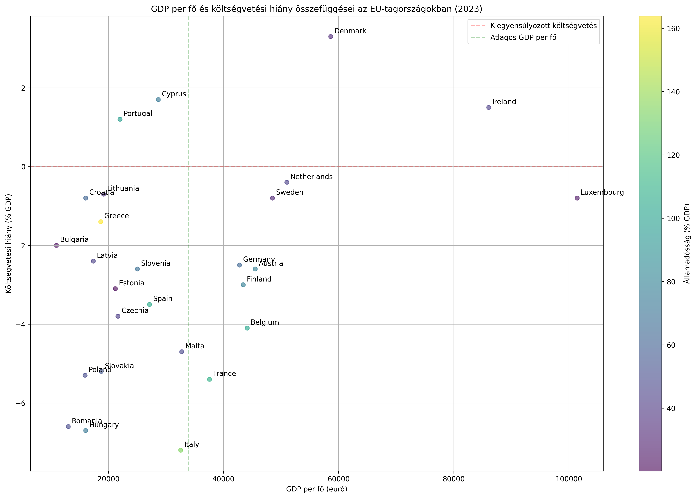
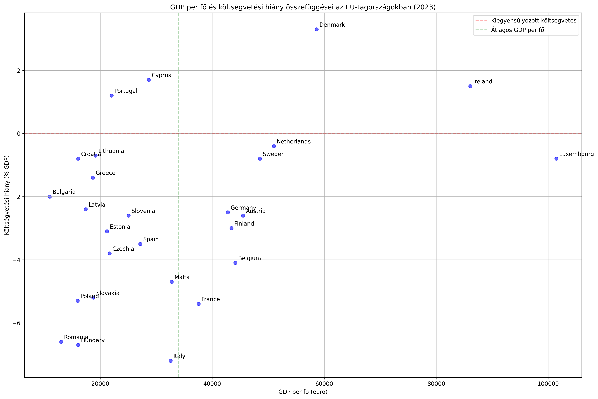

EU Economic Indicators (2013–2023)
This project analyzes key macroeconomic indicators across EU member states over the past 10 years. It focuses on GDP per capita, government deficit, and public debt, based on official Eurostat data. Visualizations help identify patterns, compare countries, and better understand the economic landscape of the European Union.
1. GDP per Capita Over Time

2. Government Debt Trends (2013–2023)

3. Debt Heatmap by Country and Year

4. Government Deficit Trends (2013–2023)

5. Top and Bottom 5 Countries by Debt (2023)

6. Top and Bottom 5 Countries by Deficit (2023)

7. Radar Chart: Country Comparison

8. GDP vs. Debt with Deficit Coloring

9. GDP vs. Deficit with Debt Coloring

10. Simplified GDP vs. Deficit View
